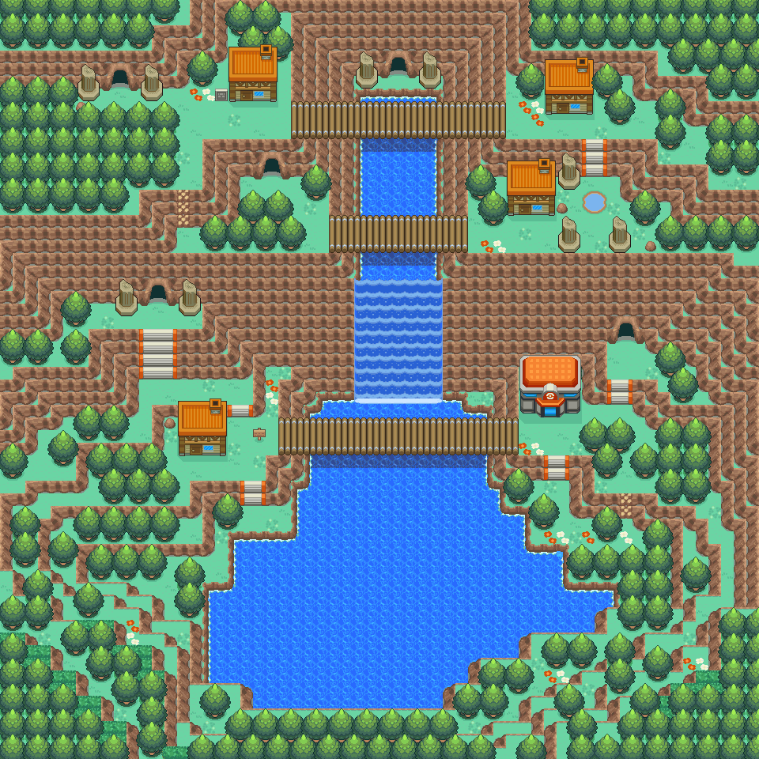
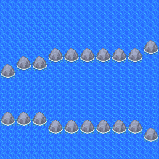
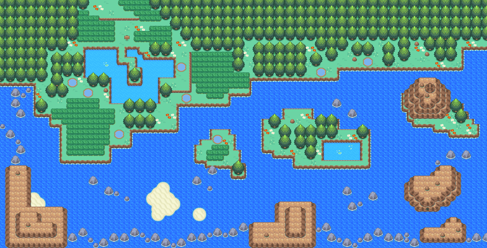
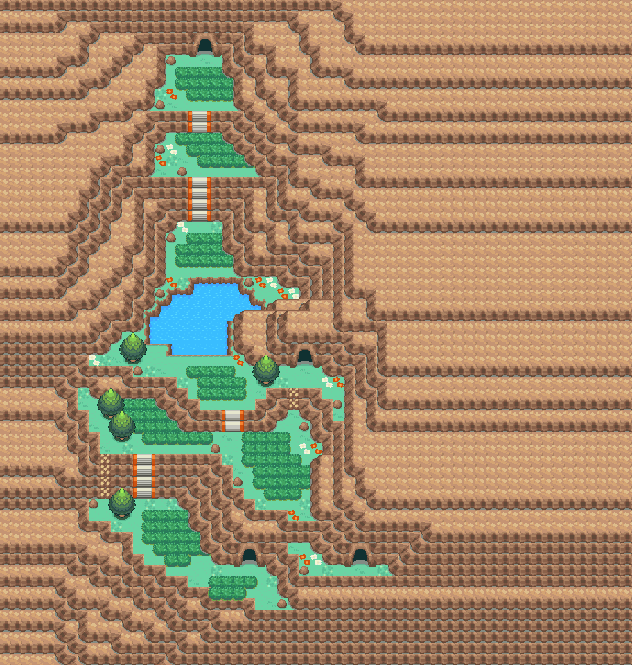
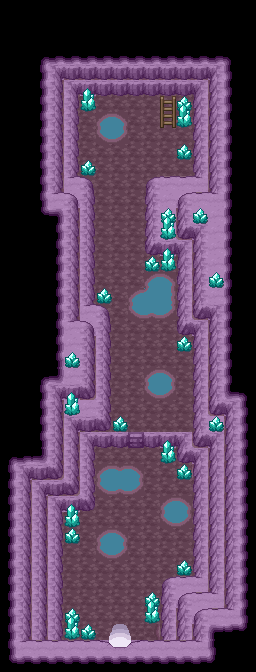
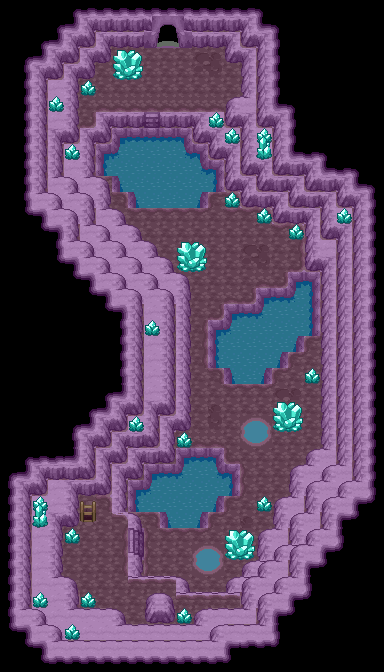
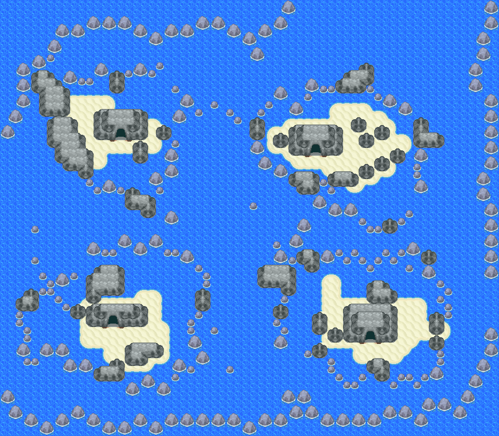

海星星（全国图鉴 No.0120）

怎样获得
野生遭遇
- 27号道路 ｜ 白天 10:00–16:59 ｜ 钓鱼·好钓竿 ｜ Lv.15–20 ｜ 选槽权重 20 ｜ 遇敌率表值 30
- 地图条目：27号道路 3:81
- 30号道路 ｜ 白天 10:00–16:59 ｜ 钓鱼·超级钓竿 ｜ Lv.35–40 ｜ 选槽权重 1 ｜ 遇敌率表值 30
- 地图条目：30号道路 3:82
- 31号道路 ｜ 白天 10:00–16:59 ｜ 钓鱼·超级钓竿 ｜ Lv.35–40 ｜ 选槽权重 1 ｜ 遇敌率表值 30
- 地图条目：31号道路 3:83
- 31号道路 ｜ 白天 10:00–16:59 ｜ 水面·冲浪 ｜ Lv.15–32 ｜ 选槽权重 4、1（合计 5） ｜ 遇敌率表值 7
- 地图条目：31号道路 3:83
- 34号道路 ｜ 白天 10:00–16:59 ｜ 钓鱼·超级钓竿 ｜ Lv.35–40 ｜ 选槽权重 15 ｜ 遇敌率表值 30
- 地图条目：34号道路 3:88
- 40号水路 ｜ 白天 10:00–16:59 ｜ 钓鱼·好钓竿 ｜ Lv.20 ｜ 选槽权重 20 ｜ 遇敌率表值 30
- 地图条目：40号水路 3:109
- 40号水路 ｜ 白天 10:00–16:59 ｜ 钓鱼·好钓竿 ｜ Lv.15–20 ｜ 选槽权重 20 ｜ 遇敌率表值 30
- 地图条目：40号水路 3:110、40号水路 3:95
- 40号水路 ｜ 白天 10:00–16:59 ｜ 钓鱼·超级钓竿 ｜ Lv.35–40 ｜ 选槽权重 40 ｜ 遇敌率表值 30
- 地图条目：40号水路 3:110、40号水路 3:95
- 47号道路 ｜ 白天 10:00–16:59 ｜ 钓鱼·超级钓竿 ｜ Lv.35–40 ｜ 选槽权重 4、1（合计 5） ｜ 遇敌率表值 30
- 地图条目：47号道路 56:25
- 48号道路 ｜ 白天 10:00–16:59 ｜ 钓鱼·超级钓竿 ｜ Lv.35–40 ｜ 选槽权重 4、1（合计 5） ｜ 遇敌率表值 30
- 地图条目：48号道路 56:26
- 吉野市 ｜ 白天 10:00–16:59 ｜ 钓鱼·好钓竿 ｜ Lv.20 ｜ 选槽权重 20 ｜ 遇敌率表值 30
- 地图条目：吉野市 3:67
- 城都矿山 ｜ 白天 10:00–16:59 ｜ 钓鱼·好钓竿 ｜ Lv.20 ｜ 选槽权重 20 ｜ 遇敌率表值 30
- 地图条目：城都矿山 1:110、城都矿山 3:113
- 擂钵山 ｜ 白天 10:00–16:59 ｜ 钓鱼·好钓竿 ｜ Lv.15–20 ｜ 选槽权重 20 ｜ 遇敌率表值 30
- 地图条目：擂钵山 1:111、擂钵山 55:8、擂钵山 55:10、擂钵山 55:11
- 擂钵山 ｜ 白天 10:00–16:59 ｜ 钓鱼·超级钓竿 ｜ Lv.35–40 ｜ 选槽权重 40 ｜ 遇敌率表值 30
- 地图条目：擂钵山 55:8、擂钵山 55:11
- 断崖镇 ｜ 白天 10:00–16:59 ｜ 钓鱼·超级钓竿 ｜ Lv.30–40 ｜ 选槽权重 4 ｜ 遇敌率表值 30
- 地图条目：断崖镇 56:27
- 浅葱市 ｜ 白天 10:00–16:59 ｜ 钓鱼·好钓竿 ｜ Lv.20 ｜ 选槽权重 20 ｜ 遇敌率表值 30
- 地图条目：浅葱市 3:72
- 湛蓝市 ｜ 白天 10:00–16:59 ｜ 钓鱼·好钓竿 ｜ Lv.20 ｜ 选槽权重 20 ｜ 遇敌率表值 30
- 地图条目：湛蓝市 3:73
- 满金市 ｜ 白天 10:00–16:59 ｜ 钓鱼·好钓竿 ｜ Lv.20 ｜ 选槽权重 20 ｜ 遇敌率表值 30
- 地图条目：满金市 3:108、满金市 3:111、满金市 3:112、满金市 3:75、满金市 3:78
- 跨海大桥 ｜ 白天 10:00–16:59 ｜ 钓鱼·好钓竿 ｜ Lv.20 ｜ 选槽权重 20 ｜ 遇敌率表值 30
- 地图条目：跨海大桥 3:115
- 连接洞 ｜ 白天 10:00–16:59 ｜ 钓鱼·好钓竿 ｜ Lv.15–20 ｜ 选槽权重 20 ｜ 遇敌率表值 30
- 地图条目：连接洞 3:86、连接洞 3:94
- 连接洞 ｜ 白天 10:00–16:59 ｜ 钓鱼·超级钓竿 ｜ Lv.35–40 ｜ 选槽权重 40 ｜ 遇敌率表值 30
- 地图条目：连接洞 3:86、连接洞 3:94
- 都城瀑布 ｜ 白天 10:00–16:59 ｜ 钓鱼·好钓竿 ｜ Lv.15–20 ｜ 选槽权重 20 ｜ 遇敌率表值 30
- 地图条目：都城瀑布 55:0
- 都城瀑布 ｜ 白天 10:00–16:59 ｜ 钓鱼·超级钓竿 ｜ Lv.35–40 ｜ 选槽权重 40 ｜ 遇敌率表值 30
- 地图条目：都城瀑布 55:0
- 黑暗洞穴 ｜ 白天 10:00–16:59 ｜ 钓鱼·超级钓竿 ｜ Lv.35–40 ｜ 选槽权重 1 ｜ 遇敌率表值 30
- 地图条目：黑暗洞穴 1:125、黑暗洞穴 1:126
- 黑暗洞穴 ｜ 白天 10:00–16:59 ｜ 水面·冲浪 ｜ Lv.2–20 ｜ 选槽权重 4、1（合计 5） ｜ 遇敌率表值 7
- 地图条目：黑暗洞穴 1:125、黑暗洞穴 1:126
- 40号水路 ｜ 黄昏 17:00–18:59 ｜ 水面·冲浪 ｜ Lv.15–24 ｜ 选槽权重 30、5（合计 35） ｜ 遇敌率表值 7
- 地图条目：40号水路 3:110、40号水路 3:95
- 41号水路 ｜ 黄昏 17:00–18:59 ｜ 水面·冲浪 ｜ Lv.15–24 ｜ 选槽权重 30 ｜ 遇敌率表值 7
- 地图条目：41号水路 3:114、41号水路 3:96
- 50号水路 ｜ 黄昏 17:00–18:59 ｜ 水面·冲浪 ｜ Lv.18–25 ｜ 选槽权重 60 ｜ 遇敌率表值 7
- 地图条目：50号水路 3:105、50号水路 3:102、50号水路 3:103
- 51号水路 ｜ 黄昏 17:00–18:59 ｜ 水面·冲浪 ｜ Lv.18–25 ｜ 选槽权重 60 ｜ 遇敌率表值 7
- 地图条目：51号水路 3:104
- 寂静之丘 ｜ 黄昏 17:00–18:59 ｜ 水面·冲浪 ｜ Lv.19–27 ｜ 选槽权重 60 ｜ 遇敌率表值 7
- 地图条目：寂静之丘 1:97、寂静之丘 56:40、寂静之丘 1:106、寂静之丘 1:98、寂静之丘 1:100、寂静之丘 1:103、寂静之丘 1:105
- 40号水路 ｜ 夜晚 19:00–04:59 ｜ 水面·冲浪 ｜ Lv.15–24 ｜ 选槽权重 30、5（合计 35） ｜ 遇敌率表值 7
- 地图条目：40号水路 3:110、40号水路 3:95
- 41号水路 ｜ 夜晚 19:00–04:59 ｜ 水面·冲浪 ｜ Lv.15–24 ｜ 选槽权重 30 ｜ 遇敌率表值 7
- 地图条目：41号水路 3:114、41号水路 3:96
- 50号水路 ｜ 夜晚 19:00–04:59 ｜ 水面·冲浪 ｜ Lv.18–25 ｜ 选槽权重 60 ｜ 遇敌率表值 7
- 地图条目：50号水路 3:105、50号水路 3:102、50号水路 3:103
- 51号水路 ｜ 夜晚 19:00–04:59 ｜ 水面·冲浪 ｜ Lv.18–25 ｜ 选槽权重 60 ｜ 遇敌率表值 7
- 地图条目：51号水路 3:104
- 寂静之丘 ｜ 夜晚 19:00–04:59 ｜ 水面·冲浪 ｜ Lv.19–27 ｜ 选槽权重 60 ｜ 遇敌率表值 7
- 地图条目：寂静之丘 1:97、寂静之丘 56:40、寂静之丘 1:106、寂静之丘 1:98、寂静之丘 1:100、寂静之丘 1:103、寂静之丘 1:105
进化
本槽的进化去向
数据来源
- 内部槽：0120
- 属性：水 ｜ 种族值合计 340
- 种族值：HP 30 ｜ 攻击 45 ｜ 防御 55 ｜ 特攻 70 ｜ 特防 55 ｜ 速度 85
- 捕获率字段：225（表值；实际捕获还受精灵球/状态/等级影响）
- 蛋群：水中3 / 水中3 ｜ 成长曲线：SLOW
- 基础数据：
wiki_export/core/data/species.json - 全国图鉴映射：
wiki_export/core/data/national_dex.json - 进化数据：
wiki_export/core/data/evolutions.json - 获取数据：
wiki_export/world/data/acquisition_by_species.json（species_id 120） - 遭遇表：
wiki_export/world/data/encounters.json - 地图：
wiki_export/world/data/maps.json - 进化方式符号：
wiki_export/enrichment/reference_only/evolution_methods.json（参考表） - 道具/招式名称：
wiki_export/core/data/items.json、wiki_export/core/data/moves.json - 证据状态：静态遭遇表证据；未证明实际可达性
地点地图
共享RGB底图；点击可缩放定位。数字对应本页相关地点，不代表地图上全部事件。
城都矿山

地图范围记录：当前资料没有精确人物／遭遇坐标。 底图有2个图块缺少原始数据。
擂钵山

地图范围记录：当前资料没有精确人物／遭遇坐标。
30号道路


地图范围记录：当前资料没有精确人物／遭遇坐标。
31号道路


地图范围记录：当前资料没有精确人物／遭遇坐标。
连接洞

地图范围记录：当前资料没有精确人物／遭遇坐标。
黑暗洞穴

地图范围记录：当前资料没有精确人物／遭遇坐标。
展开其余 37 张地点地图
连接洞

地图范围记录：当前资料没有精确人物／遭遇坐标。
34号道路

地图范围记录：当前资料没有精确人物／遭遇坐标。
满金市

地图范围记录：当前资料没有精确人物／遭遇坐标。
40号水路

地图范围记录：当前资料没有精确人物／遭遇坐标。
40号水路

地图范围记录：当前资料没有精确人物／遭遇坐标。
满金市

地图范围记录：当前资料没有精确人物／遭遇坐标。
满金市

地图范围记录：当前资料没有精确人物／遭遇坐标。
城都矿山

地图范围记录：当前资料没有精确人物／遭遇坐标。
跨海大桥

地图范围记录：当前资料没有精确人物／遭遇坐标。
40号水路

地图范围记录：当前资料没有精确人物／遭遇坐标。
擂钵山

地图范围记录：当前资料没有精确人物／遭遇坐标。
擂钵山

地图范围记录：当前资料没有精确人物／遭遇坐标。
擂钵山

地图范围记录：当前资料没有精确人物／遭遇坐标。
黑暗洞穴

地图范围记录：当前资料没有精确人物／遭遇坐标。
27号道路

地图范围记录：当前资料没有精确人物／遭遇坐标。
都城瀑布

地图范围记录：当前资料没有精确人物／遭遇坐标。
47号道路

地图范围记录：当前资料没有精确人物／遭遇坐标。 底图有3个图块缺少原始数据。
48号道路

地图范围记录：当前资料没有精确人物／遭遇坐标。
吉野市


地图范围记录：当前资料没有精确人物／遭遇坐标。
浅葱市


地图范围记录：当前资料没有精确人物／遭遇坐标。
湛蓝市


地图范围记录：当前资料没有精确人物／遭遇坐标。
满金市·住宅区


地图范围记录：当前资料没有精确人物／遭遇坐标。
满金市·港湾区

地图范围记录：当前资料没有精确人物／遭遇坐标。
断崖镇

地图范围记录：当前资料没有精确人物／遭遇坐标。
41号水路

地图范围记录：当前资料没有精确人物／遭遇坐标。
51号水路

地图范围记录：当前资料没有精确人物／遭遇坐标。
50号水路

地图范围记录：当前资料没有精确人物／遭遇坐标。
50号水路

地图范围记录：当前资料没有精确人物／遭遇坐标。
50号水路

地图范围记录：当前资料没有精确人物／遭遇坐标。
寂静之丘

地图范围记录：当前资料没有精确人物／遭遇坐标。
寂静之丘

地图范围记录：当前资料没有精确人物／遭遇坐标。
寂静之丘

地图范围记录：当前资料没有精确人物／遭遇坐标。
寂静之丘

地图范围记录：当前资料没有精确人物／遭遇坐标。
寂静之丘

地图范围记录：当前资料没有精确人物／遭遇坐标。
寂静之丘

地图范围记录：当前资料没有精确人物／遭遇坐标。
寂静之丘

地图范围记录：当前资料没有精确人物／遭遇坐标。
41号水路

地图范围记录：当前资料没有精确人物／遭遇坐标。